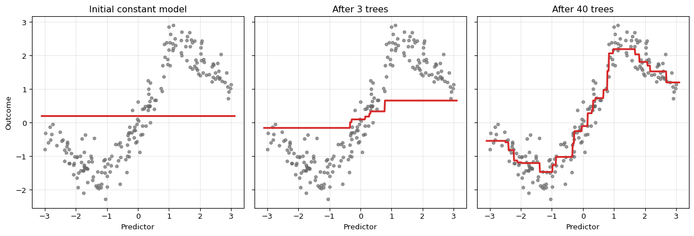
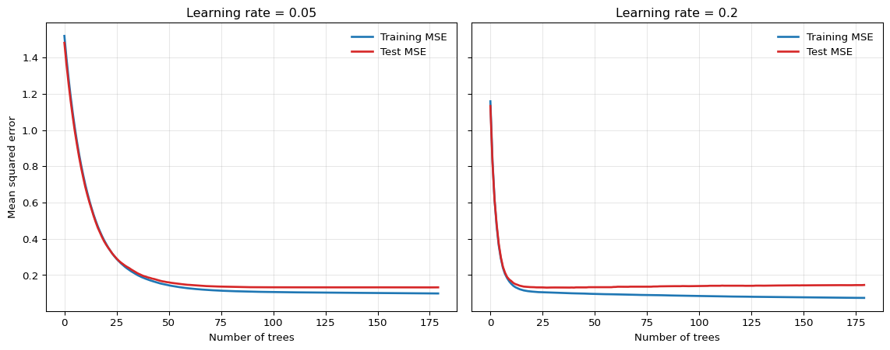

12 Gradient Boosting
12.1 Overview
Gradient boosting is a sequential tree-based method that builds an additive predictor by repeatedly fitting new trees to the mistakes of the current ensemble. Where random forests mainly reduce variance by averaging many decorrelated trees, boosting mainly reduces bias by adding weak learners in a carefully targeted way.
For econometricians, boosting is one of the most important predictive tools for structured tabular data. It can learn nonlinearities, interactions, threshold effects, and asymmetric predictive relationships without requiring the researcher to specify them manually. It is especially useful when the signal is spread across many variables and a single tree is too crude.
At the same time, boosting is more sensitive to tuning than random forests. Learning rate choice, tree depth, early stopping, and validation design matter a great deal. In time-series and forecasting applications, careless validation can create large but entirely spurious performance gains.
12.2 Roadmap
- We begin with the additive structure of boosting and contrast it with random forests.
- We then derive the squared-error version, where each new tree fits residuals.
- Next we generalize to arbitrary differentiable losses using pseudo-residuals.
- We then discuss shrinkage, tree depth, subsampling, and early stopping.
- Finally, we summarize how boosting should be interpreted and validated in econometric applications.
12.3 Additive Stagewise Modeling
Boosting constructs a predictor of the form
\[ \hat F_M(x) = \hat F_0(x) + \nu \sum_{m=1}^M \hat h_m(x), \]
where:
- \(\hat F_0\) is an initial simple predictor
- \(\hat h_m\) is the tree added at iteration \(m\)
- \(\nu \in (0,1]\) is the learning rate
- \(M\) is the number of boosting iterations
Each new tree is not fit to the original target directly. Instead, it is chosen to improve the current ensemble in the direction that most reduces the loss.
Random Forests vs Boosting
The two methods use the same basic building block, the decision tree, but in different ways:
- Random forests grow many trees largely independently and average them to reduce variance.
- Boosting grows trees sequentially, with each new tree correcting the current ensemble, mainly to reduce bias.
- Random forests are usually more robust out of the box; boosting often attains higher predictive accuracy when tuned carefully.
| Method | Ensemble structure | Main regularization lever | Main risk |
|---|---|---|---|
| Single tree | No ensemble | Tree depth, leaf size, pruning | High variance and discontinuity |
| Bagging | Parallel bootstrap trees | Number of trees and tree size | Trees may remain highly correlated |
| Random forest | Parallel bootstrap trees with feature subsampling | max_features, leaf size, number of trees |
OOB error can mislead under dependence |
| Gradient boosting | Sequential trees fit to residuals or pseudo-residuals | Learning rate, number of trees, tree depth, early stopping | Sensitive tuning and validation leakage |
12.4 Squared-Error Boosting
Start with regression and squared loss
\[ L(F) = \frac{1}{2}\sum_{i=1}^n (y_i - F(x_i))^2. \]
The factor \(\frac{1}{2}\) is algebraically convenient and does not affect the minimizer.
Step 0: Initial Model
The best constant predictor minimizes
\[ \frac{1}{2}\sum_{i=1}^n (y_i - c)^2. \]
Differentiating with respect to \(c\) gives
\[ \sum_{i=1}^n (c - y_i) = 0 \quad \Longrightarrow \quad \hat F_0(x) \equiv \bar y. \]
So the initial model is simply the sample mean.
Step 1: Residual Fitting
At iteration \(m\), define the residuals of the current ensemble as
\[ r_{im} = y_i - \hat F_{m-1}(x_i). \]
Under squared loss, these are exactly the negative gradients of the objective with respect to the current fitted values. Boosting therefore fits the next tree \(\hat h_m(x)\) to the residuals:
\[ \hat h_m \approx \arg\min_h \sum_{i=1}^n (r_{im} - h(x_i))^2. \]
The update is then
\[ \hat F_m(x) = \hat F_{m-1}(x) + \nu \hat h_m(x). \]
If \(\nu = 1\), the correction is taken in full. If \(\nu < 1\), the update is shrunken.
Squared-Error Boosting Algorithm
For the regression-tree case, the algorithm can be summarized as follows.
- Initialize \(\hat F_0(x)=\bar y\) and residuals \(r_i=y_i-\bar y\).
- For \(m=1,\ldots,M\):
- fit a shallow tree \(\hat h_m\) with depth or split count \(d\) to the current residuals
- update \(\hat F_m(x)=\hat F_{m-1}(x)+\nu \hat h_m(x)\)
- update residuals \(r_i=y_i-\hat F_m(x_i)\)
- Return the boosted predictor \(\hat F_M(x)\).
The tree depth \(d\) controls interaction order, while \(\nu\) controls how cautiously each correction is added.
The ensemble starts as a constant. With each iteration, the fit becomes more refined because the next tree is trained on what the current ensemble still gets wrong.
Why Small Trees Are Used
Boosting usually uses shallow trees rather than deep ones. A tree of depth 1 is a stump and captures a single threshold effect. A tree of depth 2 or 3 can capture low-order interactions. This is deliberate regularization:
- shallow trees make each correction simple
- many simple corrections can approximate a complicated function
- restricting tree depth reduces the risk of overfitting each stage
This stagewise logic is one reason boosting often performs well on tabular data with moderate interaction complexity.
12.5 General Gradient Boosting
The real power of boosting is that it extends beyond squared loss. Suppose the objective is
\[ \sum_{i=1}^n \ell(y_i, F(x_i)), \]
where \(\ell\) is differentiable with respect to the fitted value \(F(x_i)\). Then the pseudo-residual at iteration \(m\) is
\[ r_{im} = - \left. \frac{\partial \ell(y_i, F(x_i))}{\partial F(x_i)} \right|_{F=\hat F_{m-1}}. \]
The next tree is fit to these pseudo-residuals, and the ensemble is updated in the direction of steepest descent in function space. That is why the method is called gradient boosting.
To see the gradient structure precisely, think of \(F\) as a vector \((F(x_1), \ldots, F(x_n))^\top \in \mathbb{R}^n\), where each coordinate is the fitted value at one training observation. The total loss is a function of this vector, \(\mathcal{L}(F) = \sum_{i=1}^n \ell(y_i, F(x_i))\), and the \(i\)-th coordinate of its negative gradient at \(\hat F_{m-1}\) is exactly \(r_{im}\). Boosting cannot step directly in this direction, because the result would be \(n\) numbers with no way to generalize to new observations. Instead, each tree \(\hat{h}_m\) approximates the negative gradient within a structured, tree-shaped function class. Fitting a tree to the pseudo-residuals is therefore fitting a generalizable approximation to the steepest-descent direction.
Classification with Bernoulli Log-Loss
For binary outcomes, write
\[ p_i = \sigma(F(x_i)) = \frac{1}{1 + e^{-F(x_i)}}, \]
where \(F(x_i)\) is now a log-odds score rather than a probability directly. The Bernoulli log-loss is
\[ \ell(y_i, F(x_i)) = - y_i \log p_i - (1-y_i)\log(1-p_i). \]
Differentiating gives
\[ \frac{\partial \ell}{\partial F(x_i)} = p_i - y_i, \]
so the negative gradient is
\[ r_{im} = y_i - p_i. \]
Thus, classification boosting still looks residual-like, but the residual now lives on the probability scale rather than the outcome scale.
Connection to Cross-Entropy
For classification, boosting with Bernoulli log-loss is minimizing cross-entropy, i.e. the negative log-likelihood of a Bernoulli model. This links boosting directly to the Information Theory chapter: fitting the boosted classifier means reducing the discrepancy between observed class outcomes and predicted event probabilities.
AdaBoost as Exponential-Loss Boosting
The general gradient boosting framework unifies algorithms that were developed independently. AdaBoost, introduced by Freund and Schapire (1997) before the gradient boosting connection was made explicit, can be recovered as a special case by choosing exponential loss.
For binary classification with \(y_i \in \{-1, +1\}\), define
\[ \ell(y_i, F(x_i)) = e^{-y_i F(x_i)}. \]
The negative gradient at the current fit is
\[ r_{im} = -\left.\frac{\partial \ell(y_i, F(x_i))}{\partial F(x_i)}\right|_{F=\hat F_{m-1}} = y_i \, e^{-y_i \hat F_{m-1}(x_i)}. \]
Writing \(w_{im} = e^{-y_i \hat F_{m-1}(x_i)}\), the pseudo-residual is \(r_{im} = y_i w_{im}\). Since \(y_i \in \{-1,+1\}\), fitting a tree to these pseudo-residuals is equivalent to fitting a weighted classifier with weight \(w_{im}\) on observation \(i\). Observations that are currently misclassified — those for which \(y_i \hat F_{m-1}(x_i) < 0\) — have \(w_{im} > 1\), so the next tree is directed toward the current mistakes. This is exactly the AdaBoost observation-reweighting step.
The exponential-loss framing also reveals a limitation: \(w_{im}\) grows without bound when an observation is persistently and confidently misclassified. A single outlier can eventually dominate the loss and distort subsequent trees. By contrast, the Bernoulli log-loss gradient \(p_i - y_i\) is bounded in \((-1, 1)\), so the weight placed on any single observation is capped. This robustness is one reason log-loss is generally preferred over exponential loss in econometric applications, where outcomes can have heavy tails or influential observations.
Question for Reflection
AdaBoost and gradient boosting with log-loss both iteratively correct current mistakes. Why might you still prefer log-loss when forecasting binary recession indicators from macroeconomic data, even if both methods reached similar validation accuracy?
Suggested Answer
Macroeconomic time series contain unusual observations — financial crises, pandemic quarters — that are influential precisely because they are rare and extreme. Under exponential loss, a persistently misclassified recession quarter receives an exponentially growing weight, so subsequent trees are pulled toward fitting that single observation rather than improving predictions broadly. Log-loss assigns a bounded gradient to each observation, so no single quarter can disproportionately dominate the boosting path. In a setting where rare events matter but should not dictate the entire model, that boundedness is a meaningful practical advantage.
12.6 Regularization in Boosting
Boosting is powerful precisely because it can keep refining the fit. That is also why regularization is essential.
Learning Rate
The learning rate \(\nu\) shrinks each update:
\[ \hat F_m(x) = \hat F_{m-1}(x) + \nu \hat h_m(x). \]
Smaller \(\nu\) means:
- slower learning
- more trees needed
- often better generalization, because the fit evolves more cautiously
This is called shrinkage.
Number of Trees
The number of iterations \(M\) controls how long the algorithm keeps refining the fit.
- too few trees can underfit
- too many trees can eventually overfit
- the optimal \(M\) is usually chosen by validation or early stopping
Tree Depth
Depth controls interaction order.
- depth 1: additive threshold effects only
- depth 2: two-way interactions can appear
- deeper trees: more complex local interactions, but more risk of overfitting
Subsampling
Some boosting implementations fit each new tree on a random subsample of the data rather than the full sample. This is called stochastic gradient boosting.
Subsampling can:
- reduce variance
- improve robustness
- speed computation
At the cost of introducing additional randomness into the stagewise updates.
Implementation Note: XGBoost
XGBoost is an optimized implementation family for gradient-boosted trees. Relative to the basic algorithm in this chapter, it adds engineering and regularization features such as efficient split search, L1/L2-style penalties, sparse or missing-value handling, and scalable training. The econometric interpretation remains the same: it is still a tuned predictive tree ensemble, so validation design and the information set are central.

The smaller learning rate often gives a flatter, more forgiving test-error profile, while the larger learning rate improves more quickly but can overfit earlier.
Question for Reflection
If two boosted models have similar validation error, what evidence from the validation curve would justify the small-learning-rate, many-tree model, and what evidence would justify the larger-learning-rate, fewer-tree model?
Suggested Answer
A small learning rate with many trees is better supported when the validation curve is flatter and overfitting appears later along the boosting path. A larger learning rate with fewer trees is better supported when the time-ordered validation curve is genuinely similar but the model reaches that performance with fewer boosting steps and lower computational cost. The comparison should be based on validation over the relevant forecast origins, not on in-sample fit.
12.7 Early Stopping and Validation
Because boosting can continue to improve the training fit for many iterations, some external criterion is needed to decide when to stop. Early stopping uses a validation set or validation path to choose the number of trees.
This is not a minor implementation detail. It is one of the central regularization devices of boosting.
Econometric Warning
For forecasting applications, early stopping must be based on time-ordered validation data. Random k-fold validation can leak future information into the tuning process and make boosting appear far stronger than it truly is out of sample.
The validation design should mirror the actual forecast exercise:
- rolling or expanding windows for time series
- group-aware validation for clustered or panel-style dependence
- leakage-safe preprocessing inside each training fold
12.8 Strengths and Limits for Econometric Work
Boosting is often among the strongest off-the-shelf methods for tabular prediction problems. It is especially effective when:
- nonlinearities are important
- interactions are present but unknown
- there are many candidate predictors
- forecast accuracy matters more than structural interpretability
Strengths
- strong predictive performance on structured data
- automatic detection of nonlinearities and interactions
- flexible loss functions for means, probabilities, and other targets
- regularization knobs that can be tuned to the signal-to-noise environment
Limitations
- sensitive to hyperparameter tuning and validation design
- no natural extrapolation beyond the support of the training data
- slower and less transparent than a single tree
- variable importance and partial-effect summaries remain predictive, not causal
Like random forests, boosted trees should be understood as flexible predictive approximators, not as identification strategies.
12.9 Summary
Key Takeaways
- Gradient boosting builds an additive tree ensemble sequentially, with each new tree correcting the current ensemble.
- Under squared loss, the pseudo-residuals are ordinary residuals, so boosting repeatedly fits trees to what the current model still misses.
- Under general differentiable losses, boosting follows the negative gradient of the loss in function space; for Bernoulli log-loss, the pseudo-residual is \(y-p\).
- Learning rate, number of trees, tree depth, subsampling, and early stopping are the key regularization devices.
- Boosting can be extremely effective for econometric prediction on tabular data, but honest validation is essential, especially in time-series applications.
Common Pitfalls
- Using a large learning rate because it improves training loss quickly.
- Choosing the number of trees from a validation scheme that leaks future information.
- Forgetting that tree depth controls interaction complexity.
- Reading boosted-tree importance measures as structural or causal evidence.
- Expecting boosted trees to extrapolate smooth trends outside the training support.
12.10 Exercises
Exercise 12.1: First Step of Gradient Boosting with Shrinkage
Suppose these are four monthly observations from a small forecasting exercise in which \(y_i\) denotes next-month output growth and \(x_i\) is a leading indicator. You observe:
\[ (x_i, y_i) = (1,2), (2,3), (3,2.5), (4,5). \]
Consider squared-error boosting with decision stumps as weak learners. Let the learning rate be \(\nu = 0.4\).
- Briefly explain the idea of gradient boosting under squared loss.
- Compute the initial model \(F_0(x)\) and the residuals \(r_i = y_i - F_0(x_i)\).
- Fit the optimal first stump \(h_1(x)\) by checking the candidate split points \(1.5\), \(2.5\), and \(3.5\).
- Write the updated model \[ F_1(x) = F_0(x) + 0.4\, h_1(x). \] Compute the fitted values at the four training points.
- Compute the training SSE of \(F_1\). Compare it with the training SSE that would result from taking the full step \(\nu=1\). Why can a smaller learning rate still be useful in practice?
Exam level: suitable as-is. The exercise combines boosting mechanics, shrinkage, and the regularization interpretation of the learning rate.
Hint for Part 2
Under squared loss, the best constant predictor is the sample mean.
Hint for Part 3
For each candidate split, compute the mean residual in the left and right leaf and then the residual SSE.
Hint for Part 5
A smaller learning rate usually gives a worse fit after one step, but that is not the right comparison. Boosting is a multi-step procedure.
Solution
Part 1: Core idea
Under squared loss, boosting starts from a simple predictor and then repeatedly fits a weak learner to the current residuals. Each new tree corrects part of the remaining error.
Part 2: Initial model and residuals
The initial model is the sample mean:
\[ F_0(x)=\bar y=\frac{2+3+2.5+5}{4}=3.125. \]
Therefore the residuals are
\[ r = (-1.125,\,-0.125,\,-0.625,\,1.875). \]
Part 3: Best first stump
Check the three candidate cutoffs.
For split \(1.5\):
- left mean residual: \(-1.125\)
- right mean residual: \(\frac{-0.125-0.625+1.875}{3}=0.375\)
Residual SSE:
\[ 0 + (-0.125-0.375)^2 + (-0.625-0.375)^2 + (1.875-0.375)^2 = 3.5. \]
For split \(2.5\):
- left mean residual: \(\frac{-1.125-0.125}{2}=-0.625\)
- right mean residual: \(\frac{-0.625+1.875}{2}=0.625\)
Residual SSE:
\[ (-1.125+0.625)^2 + (-0.125+0.625)^2 + (-0.625-0.625)^2 + (1.875-0.625)^2 = 3.625. \]
For split \(3.5\):
- left mean residual: \(\frac{-1.125-0.125-0.625}{3}=-0.625\)
- right mean residual: \(1.875\)
Residual SSE:
\[ (-1.125+0.625)^2 + (-0.125+0.625)^2 + (-0.625+0.625)^2 + (1.875-1.875)^2 = 0.5. \]
So the best first stump is
\[ h_1(x)= \begin{cases} -0.625, & x \leq 3.5, \\ 1.875, & x > 3.5. \end{cases} \]
Part 4: Shrinkage update
With \(\nu=0.4\),
\[ F_1(x)=F_0(x)+0.4\,h_1(x). \]
Therefore
\[ F_1(x)= \begin{cases} 3.125 + 0.4(-0.625)=2.875, & x \leq 3.5, \\ 3.125 + 0.4(1.875)=3.875, & x > 3.5. \end{cases} \]
So the fitted values at the four training points are
\[ (2.875,\ 2.875,\ 2.875,\ 3.875). \]
Part 5: Training SSE and interpretation
The training SSE is
\[ (2-2.875)^2 + (3-2.875)^2 + (2.5-2.875)^2 + (5-3.875)^2 = 2.1875. \]
If instead \(\nu=1\), then
\[ F_1(x)= \begin{cases} 2.5, & x \leq 3.5, \\ 5, & x > 3.5, \end{cases} \]
and the resulting SSE is
\[ (2-2.5)^2 + (3-2.5)^2 + (2.5-2.5)^2 + (5-5)^2 = 0.5. \]
So after one step, the full update fits the training sample better. But a smaller learning rate can still be useful because it regularizes the path of the algorithm. With many steps, cautious updates often generalize better out of sample than aggressive early corrections.
Exercise 12.2: Bernoulli Log-Loss and Early Stopping
Consider binary outcomes \(y_i \in \{0,1\}\) and a boosting model with score \(F(x_i)\) and probability
\[ p_i = \sigma(F(x_i)) = \frac{1}{1+e^{-F(x_i)}}. \]
The Bernoulli log-loss for observation \(i\) is
\[ \ell(y_i,F(x_i)) = - y_i \log p_i - (1-y_i)\log(1-p_i). \]
- Show that \[ \frac{\partial \ell(y_i,F(x_i))}{\partial F(x_i)} = p_i - y_i. \] Conclude that the pseudo-residual is \(r_i = y_i - p_i\).
- Suppose the initial model is a constant, \(F_0(x)\equiv c\). Show that the value minimizing the total log-loss satisfies \[ \sigma(c)=\bar y, \] and hence \[ c = \log\left(\frac{\bar y}{1-\bar y}\right). \]
- For the sample \(y=(1,1,0,1)\), compute \(\bar y\), the optimal initial constant \(F_0\), the implied initial probability \(p_i\), and the pseudo-residuals.
Exam level: suitable as-is. Parts 1-3 derive the classification gradients formally.
Hint for Part 1
Differentiate through the logistic link: \(\sigma'(z)=\sigma(z)(1-\sigma(z))\).
Hint for Part 2
Differentiate the total loss with respect to the constant \(c\) and set the derivative equal to zero.
Solution
Part 1: Derivative of log-loss
Write \(p_i=\sigma(F_i)\) with \(F_i=F(x_i)\). Then
\[ \ell_i = -y_i \log p_i - (1-y_i)\log(1-p_i). \]
Differentiate with respect to \(F_i\):
\[ \frac{\partial \ell_i}{\partial F_i} = -y_i \frac{1}{p_i}\frac{\partial p_i}{\partial F_i} - (1-y_i)\frac{1}{1-p_i}\left(-\frac{\partial p_i}{\partial F_i}\right). \]
Since \(\frac{\partial p_i}{\partial F_i}=p_i(1-p_i)\), this becomes
\[ \frac{\partial \ell_i}{\partial F_i} = -y_i(1-p_i) + (1-y_i)p_i = p_i - y_i. \]
Therefore the negative gradient is
\[ r_i = -\frac{\partial \ell_i}{\partial F_i} = y_i - p_i. \]
Part 2: Optimal constant initial model
If \(F_0(x)\equiv c\), then every observation has the same probability \(p=\sigma(c)\). The total loss is
\[ L(c)= -\sum_{i=1}^n \left[y_i \log p + (1-y_i)\log(1-p)\right]. \]
From Part 1, the derivative with respect to \(c\) is
\[ \frac{dL}{dc} = \sum_{i=1}^n (p - y_i) = np - \sum_{i=1}^n y_i. \]
Setting this equal to zero gives
\[ p = \frac{1}{n}\sum_{i=1}^n y_i = \bar y. \]
Since \(p=\sigma(c)\),
\[ \sigma(c)=\bar y. \]
Applying the logit transformation,
\[ c = \log\left(\frac{\bar y}{1-\bar y}\right). \]
Part 3: Numerical example
For \(y=(1,1,0,1)\),
\[ \bar y = \frac{3}{4} = 0.75. \]
Hence
\[ F_0 = \log\left(\frac{0.75}{0.25}\right)=\log 3 \approx 1.099. \]
The implied initial probability is
\[ p_i = \sigma(F_0)=0.75 \qquad \text{for all } i. \]
So the pseudo-residuals are
\[ r = (1-0.75,\ 1-0.75,\ 0-0.75,\ 1-0.75) = (0.25,\ 0.25,\ -0.75,\ 0.25). \]
References
Freund, Yoav, and Robert E. Schapire. 1997. “A Decision-Theoretic Generalization of On-Line Learning and an Application to Boosting.” Journal of Computer and System Sciences 55 (1): 119–39. https://doi.org/10.1006/jcss.1997.1504.